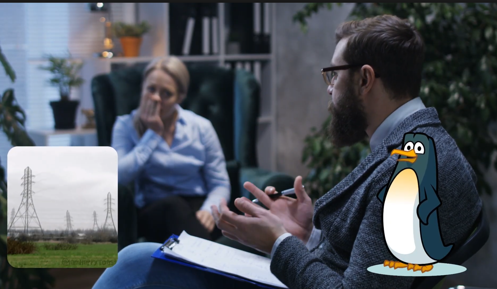

CHALLENGES CONQUERED
- The Problem: I struggled to fill the length requirement of the podcast
- The Solution: I had to add more details about what I did during showcase
- The Problem: I forgot some of what happened during some of the presentations I went to
- The Solution: I asked friends that I went with what happened if they remembered as well
- The Problem: The background music, sfx and my voiceover were conflicting, they were either too loud or too quiet
- The Solution: I learned how to use audio layering within Adobe Express

CONCEPTS LEARNED
- Adobe Express I learned how to navigate Adobe Express and how to make voiceovers while making the video look visually appealing.
HABITS OF MIND
- Reflection: After rewatching my podcast, I realized that the transitions were inconsistent, it would either be too long or too short so I changed the timings between frames..
- Persistence: Many times when I was recording I would stutter or slur my words and I would have to restart that whole section, being sick while recording didn’t help…